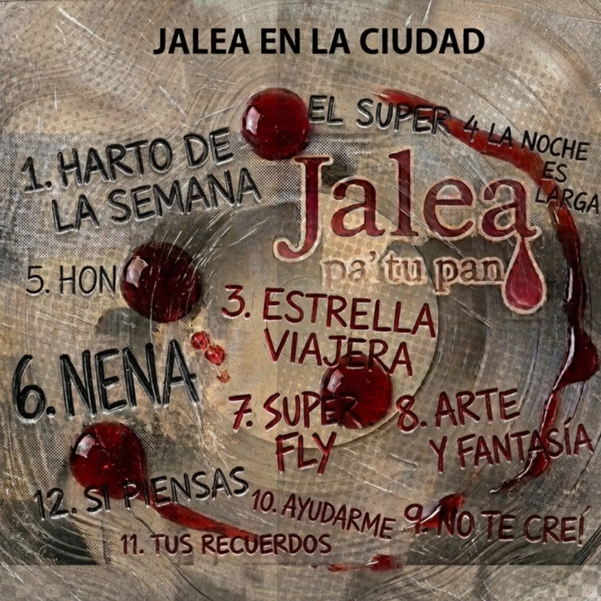
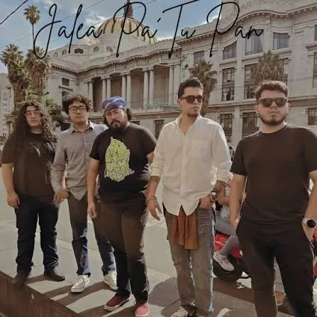

JALEA PA' TU PAN
EN VIVO DESDE LA UNAM

El rock independiente y los ritmos latinos en México tienen su verdadero termómetro en las universidades públicas, y Jalea Pa' Tu Pan lo sabe perfectamente. La agrupación acaba de lanzar su álbum compilatorio "JALEA EN LA CIUDAD con Recetario de Emociones (en Vivo desde la UNAM)", un material de 13 canciones y casi una hora de duración que captura la esencia más pura, ruidosa y energética de la banda sobre el escenario.
A diferencia de las producciones pulidas y sobreproducidas de estudio, este disco funciona como un testimonio de lo que la banda es en realidad: una máquina de ritmo armada para hacer bailar, gritar y sudar a la multitud a base de ska, rock alternativo, reggae y ganchos urbanos.
📋 El menú del Recetario: Entre la fiesta y el desamor
El álbum es un recorrido redondo por la identidad de la banda, compilando versiones en vivo que superan la energía de sus grabaciones originales. El setlist grabado en la máxima casa de estudios se divide entre el desahogo cotidiano y las crónicas del barrio y el corazón:

💬 EL VEREDICTO DE LA RESEÑA
JALEA EN LA CIUDAD no es un disco para escuchar de fondo; es un álbum que exige atención y volumen alto. Jalea Pa' Tu Pan logra plasmar el caos controlado de sus conciertos en un formato digital sin perder un ápice de potencia. En una época donde muchas bandas independientes suenan idénticas y prefabricadas, este material en vivo desde la UNAM es un recordatorio de que el verdadero rock y ska mexicano se defiende con sudor, vientos ruidosos y distorsión frente a la gente. Una joya obligatoria para quienes extrañan la adrenalina de los conciertos masivos.